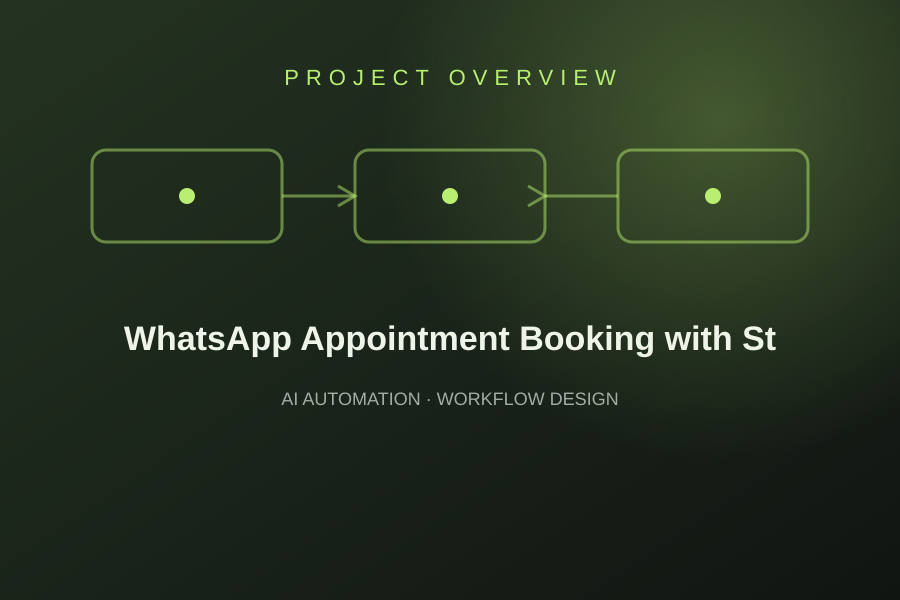

← Back to all projects
Project case study / 02
WhatsApp Appointment Booking with Stripe
A dental-clinic booking workflow for appointment requests, rescheduling, cancellations and payment steps.
The problem
Appointment requests arriving through chat can require staff to check calendars, confirm details and handle changes manually. Payment follow-up adds another disconnected step.
What I built
A WhatsApp-based n8n workflow routes booking, reschedule and cancellation requests, then connects payment-related steps through Stripe test-mode actions.
How the workflow works
- A customer sends an appointment request through WhatsApp.
- The workflow interprets the intent and gathers the required booking details.
- It routes the request to the relevant booking or change path.
- Stripe test-mode steps support payment or refund handling where applicable.
How it helps
The design demonstrates how chat, booking logic and payment steps can be coordinated in one workflow. Stripe test mode is not evidence of live payment processing.
Project evidence

Workflow files
Secret-like values and credential references have been redacted. Add your own credentials before importing into n8n.